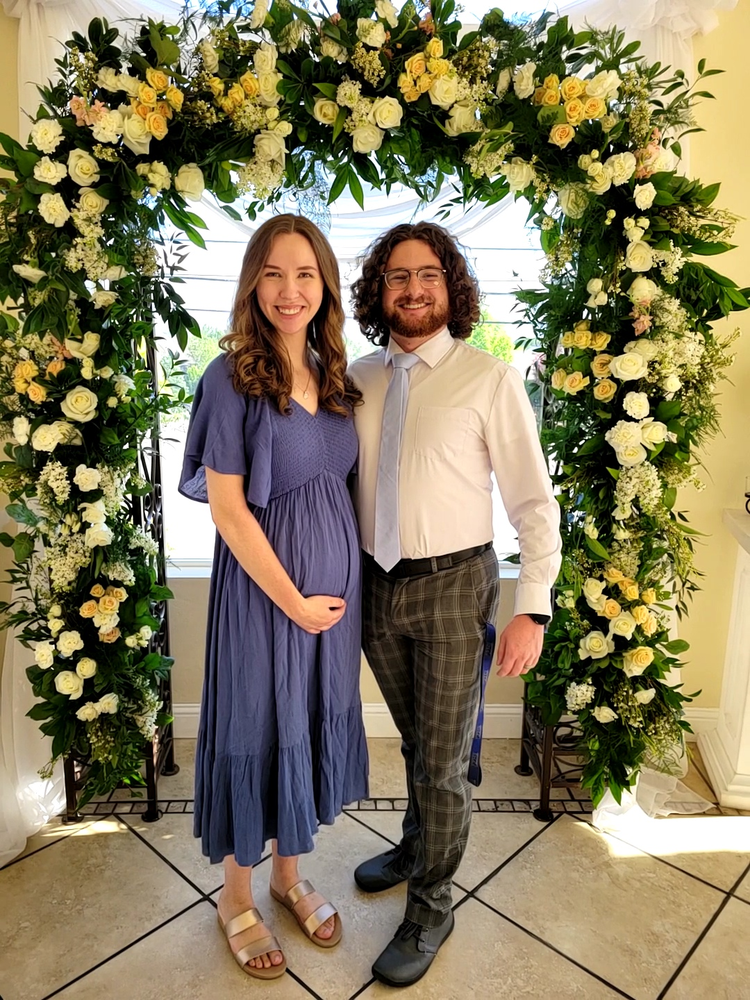

My name is Colby Barrett. I am a Computer Science major, and I love programming. When I started going to college I didn't know what I wanted to go into, until I took CS 1400 in Python and absolutely fell in love with programming. Because of that I have started getting into game development as a hobby. I am married and have a child on the way. She's due in August. My wife and I are nerds through and through. This site is for the HTML course for CS 1030.
